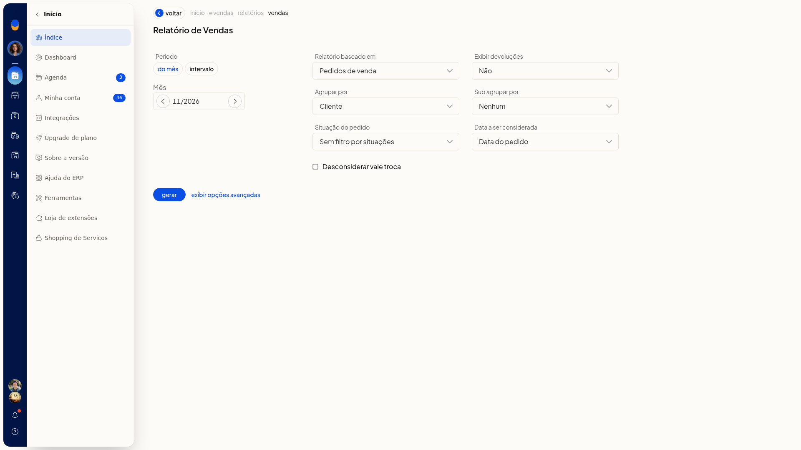
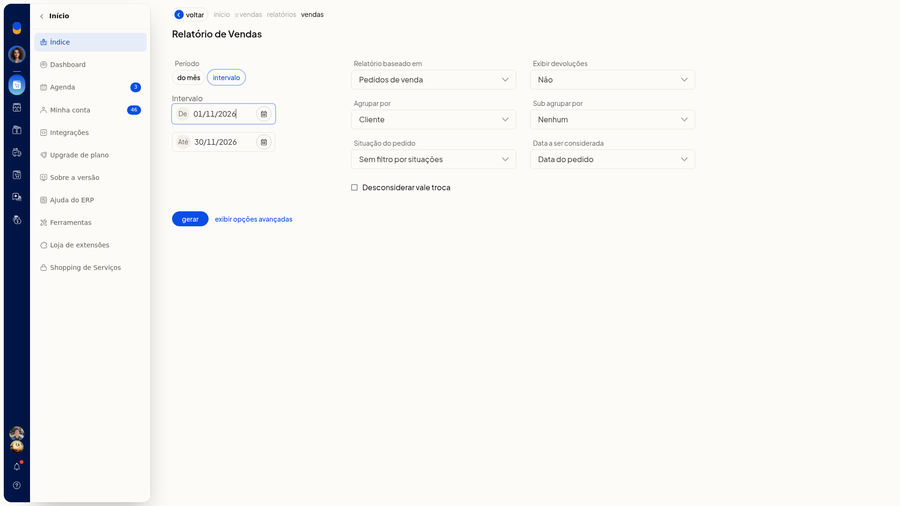
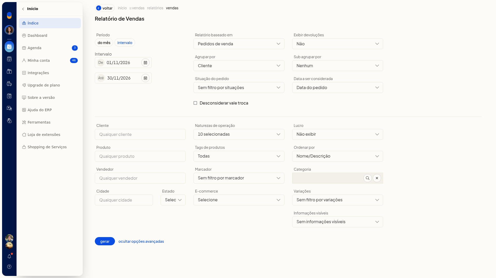
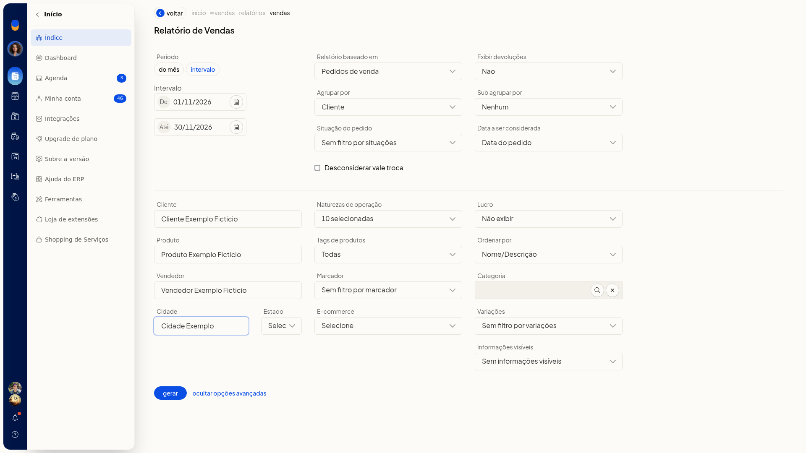
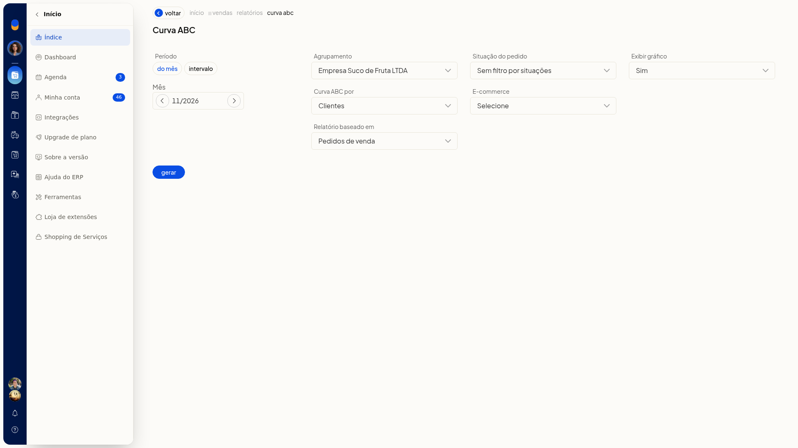
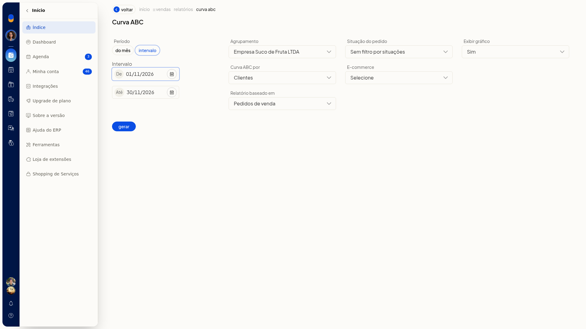

Relatórios de vendas e curva ABC
No ERP da Olist, você monta o Relatório de Vendas e a Curva ABC para analisar as vendas do período sem sair do sistema. Em Vendas > Relatórios, em Geral, você define período, origem dos dados e agrupamentos e deixa o formulário pronto para gerar.
Instruções
Relatório de Vendas
-
Acesse Vendas > Relatórios.

-
Em Geral, clique em Vendas (Relatório de Vendas).
-
Escolha o período em Do mês (mês/ano) ou Intervalo. Em Intervalo, preencha De e Até no formato dia/mês/ano. O campo não é obrigatório.


-
Defina os critérios principais. Nenhum deles é obrigatório:
- baseado em: Pedidos de venda ou Notas fiscais
- devoluções: Sim ou Não
- Agrupar por: Nenhum, Cliente, Produto, Vendedor, Fornecedor padrão do produto, E-commerce ou Marca
- Sub agrupar: Nenhum, Cliente, Produto, Vendedor, Fornecedor padrão do produto ou Marca
- Situação: Sem filtro ou uma situação (Em aberto, Aprovado, Preparando envio, Faturado, Pronto para envio, Enviado, Entregue, Não entregue, Dados incompletos, Em devolução, Cancelado)
- data considerada: Data do pedido, Data do faturamento ou Data prevista
-
Se precisar, marque Desconsiderar vale troca e abra as opções avançadas.

-
Preencha só o que a análise pedir. Os campos avançados não são obrigatórios:
- Cliente, Produto, Vendedor, Cidade, Naturezas, Tags, Marcador, E-commerce, Categoria e Variações
- Estado: UF ou EX
- Lucro: Não exibir, custo dos produtos ou última compra
- Ordenar por: Nome/Descrição, Valor ou Quantidade
- Informações visíveis: inclui Frete pago pela empresa
-
Confira período e critérios. O formulário fica preenchido e pronto para gerar.

Curva ABC
-
Em Vendas > Relatórios, em Geral, clique em Curva ABC.
-
Escolha Do mês (mês/ano) ou Intervalo. Em Intervalo, preencha De e Até no formato dia/mês/ano. O período não é obrigatório.


-
Defina o agrupamento e os demais critérios. Nenhum deles é obrigatório:
- Curva ABC por: Clientes ou Produtos
- baseado em: Pedidos ou Notas fiscais
- Situação: Sem filtro ou as mesmas situações do Relatório de Vendas
- E-commerce
- Exibir gráfico: Sim ou Não
- Confira período e critérios. O formulário fica na tela anterior à geração.
Resultado
Vendas > Relatórios mostra o catálogo, com Vendas e Curva ABC em Geral. Os dois formulários abrem com período e opções, antes de gerar.
Informações adicionais
- O catálogo de Vendas > Relatórios também inclui Relatório Financeiro de Vendas.